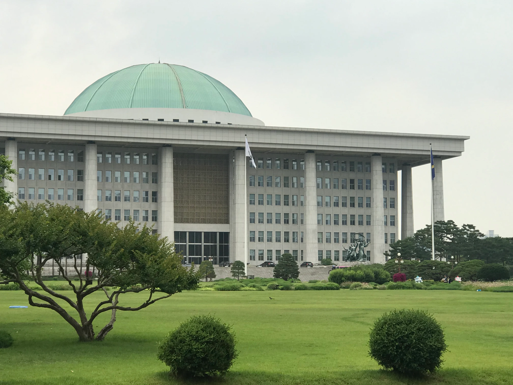

이재명 대통령이 2일 오전 10시 국회 본회의장에서 2027년도 예산안에 대한 시정연설에 나섰다. 국회의장과의 사전 환담을 거쳐 본회의에 참석한 대통령은 내년도 예산안의 편성 취지와 주요 사업을 설명하고 예산안 심사·처리에 여야의 초당적 협조를 당부했다. 정기국회의 국정감사가 마무리된 직후 곧바로 예산 정국으로 넘어가는 시점에 이뤄진 연설이어서 여야의 반응에도 관심이 쏠렸다. 역대 대통령들이 정기국회 초반 시정연설을 통해 예산안의 큰 방향을 제시해온 전례를 감안하면, 이번 연설 역시 향후 한 달간 이어질 예산 심사의 기조를 가늠할 잣대로 받아들여지고 있다.
정부가 국회에 제출한 내년도 예산안은 총지출 기준 820조9000억원으로 역대 최대 규모다. 올해 본예산 727조9000억원보다 93조원, 비율로는 12.8% 늘어난 수치로, 최근 몇 년간의 예산 증가율과 비교해도 두드러지게 가파른 확장이다. 정부는 이번 예산을 미래성장동력 확보와 민생 안정, 지방 주도 성장 등에 투입한다는 구상을 밝혔으며, 국회는 법정 처리 시한인 12월 2일까지 심사와 의결을 마쳐야 한다. 이 기간 동안 각 상임위원회 별로 부처별 예산안에 대한 세부 심사가 순차적으로 진행될 예정이다.

이번 예산안의 핵심은 162조3000억원 규모로 새로 편성된 '미래대응기금'이다. 반도체 수출 호황 등에 따라 추가로 확보된 세수 여력을 활용해 조성하는 기금으로, 정부는 이를 통해 청년 지원과 미래 성장동력 육성, 지방 균형발전 등에 재정을 집중적으로 투입하겠다는 방침이다. 대통령은 시정연설에서 반도체 산업이 거둔 성장의 과실을 국민 전체로 넓혀가야 한다는 점을 강조한 것으로 전해졌다. 특정 산업의 호황에서 나온 세수를 특정 계층에만 머물게 하지 않고, 교육과 지역 균형발전 등 여러 분야로 확산시켜야 한다는 설명도 함께 제시됐다.
정부는 올해 반도체 수출이 호조를 보이며 세수 여건이 비교적 양호해진 만큼, 지금이 재정의 역할을 적극적으로 확대할 시점이라고 보고 있다. 전 세계적으로 인공지능 산업을 둘러싼 경쟁이 가속화되는 가운데 투자 시기를 놓치면 기술 격차가 벌어질 수 있다는 우려도 이번 예산 편성의 배경으로 꼽힌다.
다만 여야의 시선은 엇갈린다. 야당은 미래대응기금 사업 가운데 현금성 지원 비중이 적지 않다는 점을 문제 삼으며 지출 구조조정이 필요하다는 입장을 밝혀온 반면, 여당은 재정 건전성을 관리하면서도 성장동력 투자를 미룰 수 없다는 논리로 맞서고 있다. 시정연설 이후 본격화될 상임위별 예산안 심사 과정에서도 이 같은 입장차가 쟁점이 될 전망이다.
이날 국회에서는 시정연설에 앞서 국회의장과 각 상임위 일정이 이어졌고, 오후에는 의원회관에서 2027년도 예산안을 주제로 한 토론회도 예정돼 있었다. 예산안과 함께 올라온 법률 개정안들도 함께 논의될 예정이어서, 국회는 예산 심사와 입법 처리가 동시에 맞물리는 빡빡한 일정을 이어가게 됐다.
국회는 법정 시한인 12월 2일까지 내년도 예산안을 처리해야 하지만, 과거에도 여야 협상이 막판까지 이어지며 시한을 넘긴 사례가 반복됐던 터라 이번에도 순탄치 않은 심사 과정이 예상된다. 미래대응기금을 둘러싼 입장 차가 큰 만큼, 연말까지 예산 정국이 이번 정기국회의 최대 분수령이 될 것이라는 관측이 나온다. 시정연설에서 대통령이 강조한 초당적 협력이 실제 심사 과정에서 어느 정도 성과로 이어질지가 향후 한 달간 정치권의 핵심 관전 포인트로 꼽힌다.